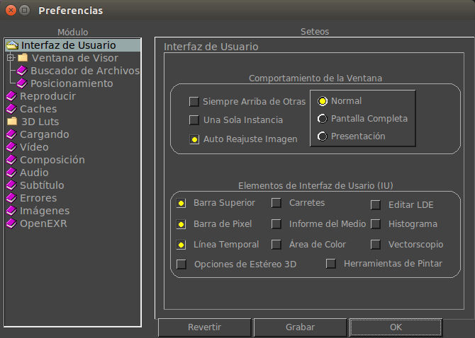

Las Preferencias de la Interfaz del Usuario te permiten configurar como se ve la interfaz de mrViewer y su ventana principal una vez que mrViewer arranca.
|  | te permite que la ventana
de mrViewer aparezca siempre sobre las ventanas de otras aplicaciones. Esto puede ser util cuando se utiliza a mrViewer como visor de renders.
te permite tener un solo mrViewer. Si otros mrViewers son opened, mandarán sus imágenes a la ventana del mrViewer original. Nótese que para que mrViewer sepa si está abierto depende de escribir un archivo de cerrojo en tu directorio de preferencias ( $HOME/.filmaura o %HOMEPATH%/.filmaura ). Si mrViewer se cuelga o se cierra mal, puede que tengas que borrar ese archivo de cerrojo manualmente.
Esta opción hace que las imagenes esten centradas y con zoom out propio para verlas en su totalidad cada vez. Nótese, sin embargo, que este reajuste sucede cada vez que cambia de imágenes o carga nuevas, por lo que deberías apagar esta opción si quieres comparar dos imágenes a cierto factor de zoom.
, , y
te permite elegir como mrViewer
arranca. Pantalla Completa tratará de maximizar la ventana de
mrViewer para cubrir tu espacio de pantalla. El modo de Presentation es como Pantalla completa, pero sacará todas las ventanas y barras de herramientas.
Normal mode agranda la ventana de mrViewer basado en la primer
imagen o pelicula cargada (y su proporción de pixel).
Esta sección le permite permutar que ventanas y porciones de mrViewer aparecen cuando este se abre.
Esta sección te permite
adaptar como la linea de tiempo muestra el tiempo. Puede ser en cuadros, segundos, tiempo, Timecode con Cuadros Deshechados, Timecode sin Cuadros Deshechados.
|